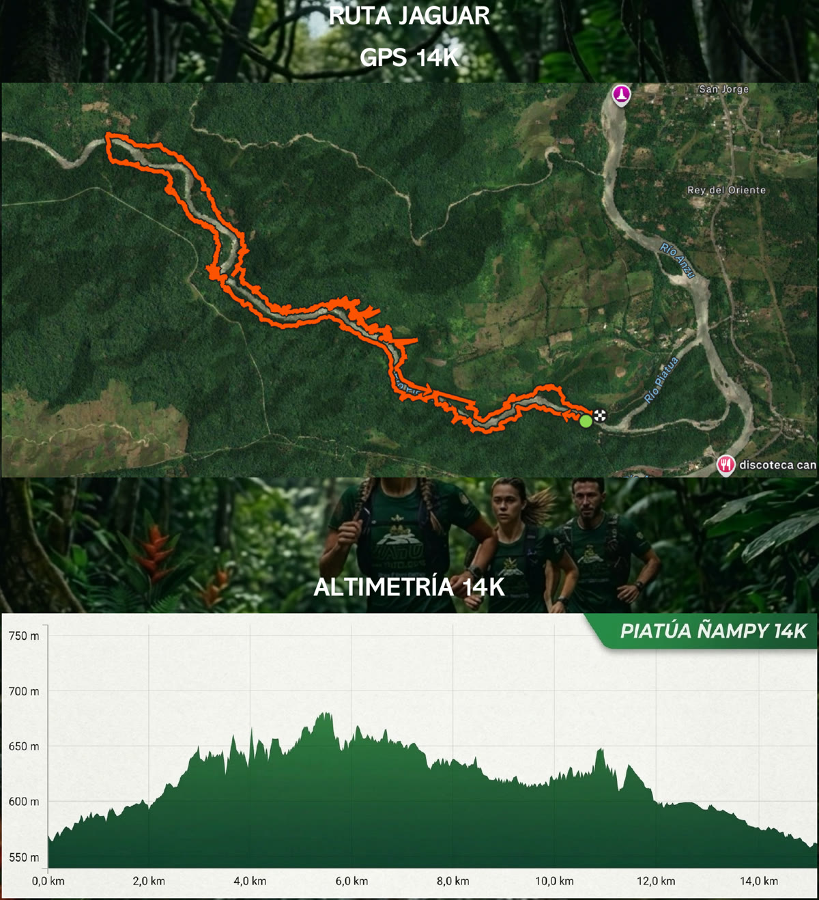
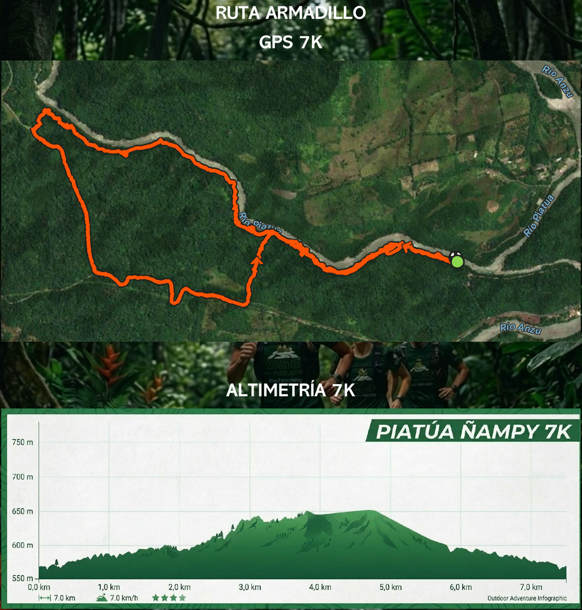
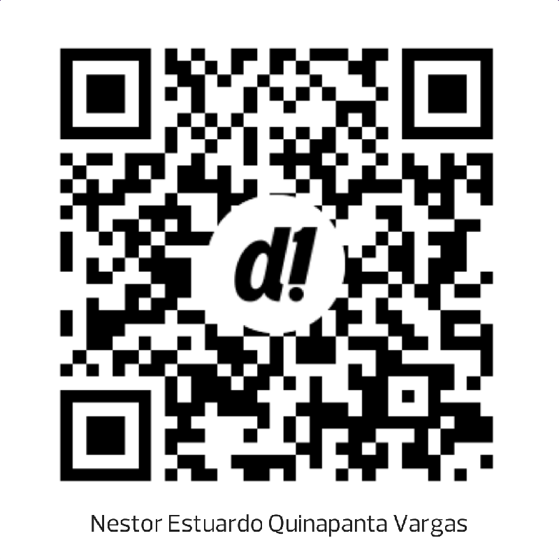

1Bienvenida
Bienvenido a la primera edición de Piatúa Ñampy Trail Running, una experiencia única que conecta el deporte con la majestuosidad de la Amazonía ecuatoriana. Un recorrido que abarca caminos forestales al contorno del Río Piatúa. No es solo una carrera: es una experiencia deportiva que pondrá a prueba tu resistencia y en la que reencontrarás el sentido de pertenencia a la naturaleza.
En esta guía encontrarás toda la información que requieres para participar. Revísala con detenimiento para asegurar tu participación y conocer todos los pormenores de cronograma, logística, seguridad e inscripción del evento.
2Localización
Santa Clara es uno de los cuatro cantones de la provincia de Pastaza, en el centro-norte de la Amazonía ecuatoriana, a lo largo de la vía que conecta Puyo con Tena y limitando al norte con la provincia de Napo. Su entorno se caracteriza por abundante vegetación tropical, ríos cristalinos y clima cálido-húmedo. Destaca por sus balnearios naturales, en especial Piatúa, cascadas y cavernas; ideal para turismo de naturaleza, senderismo, kayak y rafting.
¿Cómo llegar?
Desde Quito – Ambato – Santa Clara: salida de Quito por la Troncal de la Sierra al sur, pasando por Latacunga hasta Ambato. Desde Ambato, desvío al oriente por la vía a Pelileo hasta Baños de Agua Santa y descenso hasta Puyo. Finalmente, carretera E45 (vía Puyo – Tena) hacia el norte: Santa Clara está a 40 minutos de Puyo por vía asfaltada.
Desde Macas: Troncal Amazónica al norte hacia Pastaza, por Sucúa y Chupianza hasta Puyo. Tomar el paso lateral al norte por la E45 (vía Puyo – Tena): Santa Clara está a 40 minutos del norte de Puyo.
3Información de carrera
| Lugar | |
|---|---|
| Punto de encuentro | Balneario del Río Piatúa |
| Cantón | Santa Clara |
| Provincia | Pastaza (vía Puyo – Tena) |
| Ubicación | maps.app.goo.gl/zHKp6xKUrxJX2FKEA |
| Itinerario · 14 nov 2026 | |
|---|---|
| Concentración | 07h00 |
| Partida 14K | 09h00 |
| Partida 7K | 09h20 |
| Premiación | 12h00 |
| Distancia | Identificación |
|---|---|
| 14K | JAGUAR |
| 7K | ARMADILLO |
Ruta Jaguar · GPS y altimetría 14K

Ruta Armadillo · GPS y altimetría 7K

4Contenido del kit
El kit se entregará presentando el documento de identidad. Si es retirado por una tercera persona, deberá presentar copia del documento de identidad del participante y una autorización firmada.
La inscripción y el dorsal son personales e intransferibles. Ceder, vender o intercambiar el dorsal, o permitir que otra persona compita con él, ocasionará la descalificación. Una vez confirmada la inscripción no habrá devoluciones ni cambios de participante o distancia, salvo decisión excepcional de la organización.
Entrega de kits
| Día | Lugar y horario |
|---|---|
| Viernes 13 de noviembre | GAD Municipal de Santa Clara · 13h00 a 18h00 |
| Sábado 14 de noviembre (día del evento) | 06h00 a 08h00 · exclusivo para participantes de fuera de la provincia |
Kit
- Dorsal (número)
- Chip
- Bolso
- Camiseta
- Medalla
- Silbato de emergencia (en caso de perder la ruta o sufrir un accidente, úsalo para identificar la zona o emitir una alerta)
Abastos
- Hidratación en la mitad del recorrido
- Fruta
- Agua
- Medalla finisher para quienes completen el recorrido
5Categorías y dorsales
| Categoría | 14K (H y M) | 7K (H y M) |
|---|---|---|
| Juvenil | 15 – 19 | 12 – 19 |
| Senior | 20 – 29 | 20 – 29 |
| Máster A | 30 – 39 | 30 – 39 |
| Máster B | 40 – 49 | 40 – 49 |
| Supermáster | 50 en adelante | 50 en adelante |
Premios · ganadores generales
| Distancia | General masculino | General femenino |
|---|---|---|
| 7K Armadillo | $100 | $100 |
| 14K Jaguar | $100 | $100 |
Premiación: sábado 14 de noviembre a las 12h00.
6Seguridad, salud e higiene
Seguridad
- Las rutas estarán señalizadas con cintas de peligro y otros elementos visibles definidos por la organización.
- Material obligatorio: calzado adecuado para trail; gafas para protección visual.
- Prohibido: bastones / trekking poles; correr con mascotas; pacers o liebres.
Salud
- El Director de Carrera o el equipo médico podrá retirar a cualquier participante si continuar representa un riesgo.
- Todo inscrito contará con un seguro de Sweaden Seguros.
Higiene
- Arrojar basura, dañar la flora o molestar a la fauna silvestre ocasionará la descalificación inmediata.
7Recomendaciones generales
- Llegar con antelación al lugar de partida.
- Mantener el dorsal visible en la parte frontal.
- Seguir la señalización y pasar por todos los controles.
- Solicitar auxilio en caso de evidenciar una emergencia.
- Informar inmediatamente en caso de abandono.
- Respetar tiempos de corte e instrucciones del personal.
- Revisar los canales oficiales ante cualquier cambio.
- Evitar alimentos pesados previo a la carrera.
- Llevar ropa de cambio y protección para lluvia.
- Hidratarse de forma regular.
- Tras cruzar la meta, liberar el área de llegada.
- Recoger tus residuos y pertenencias antes de retirarte.
8Condiciones
La inscripción y participación implican la aceptación íntegra del Reglamento Oficial y de esta Guía del Corredor que lo complementa. Por razones técnicas, ambientales, sanitarias o de seguridad, la organización podrá modificar horarios, recorridos o puntos de control; neutralizar o suspender la competencia; o cancelar una o varias distancias. Los cambios se comunicarán mediante los canales oficiales.
Si una categoría no alcanza un mínimo de 30 participantes, la organización podrá unir a dichos competidores con otra categoría similar.
9Inscripción y confirmación
Paso 1 · Pago
Paga con Deuna o la app de Banco Pichincha: escoge la opción pagar a QR, escanea el código, ingresa el monto, paga y ¡listo!
| Distancia | Valor |
|---|---|
| 14K Jaguar | $25 |
| 7K Armadillo | $20 |
Incluye: camiseta, medalla, bolso, chip y dorsal.
Cierre de inscripciones: jueves 12 de noviembre de 2026.

Deuna · Banco Pichincha
Paso 2 · Completa la ficha de inscripción
Ingresa a la ficha de inscripción en www.piatuatrail.com, completa estos datos y sube la foto o captura del comprobante de pago:
- Nombres y apellidos completos · Cédula o pasaporte
- Fecha de nacimiento · Sexo · Distancia (14K Jaguar / 7K Armadillo)
- Talla de camiseta · Celular · Correo electrónico · Ciudad o club
- Tipo de sangre · Contacto de emergencia (nombre y teléfono)
📱 WhatsApp: +593 99 157 0800 (wa.me/593991570800)
✉️ Correo: kinesportssas@gmail.com · quinesclub@gmail.com
Paso 3 · Confirmación
La organización verifica el pago y aprueba tu inscripción. Consulta con tu número de cédula en Verificar (www.piatuatrail.com/verificar): tu cupo queda asegurado cuando aparece como aprobada. Presenta tu documento de identidad al retirar el kit.
La inscripción es personal e intransferible. Una vez confirmada no hay devoluciones ni cambios de participante o distancia, salvo decisión excepcional de la organización.